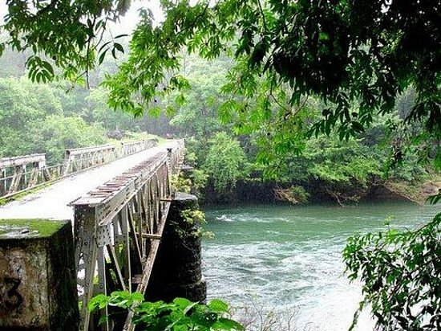

Nilambur Teak Museum

Nilambur Teak Museum, situated in Nilambur, Kerala, India, stands as a testament to the rich history and significance of teak in the region. Nestled amidst the lush greenery of the Western Ghats, the museum showcases the evolution of the teak industry and its impact on the local economy. Visitors are greeted by an impressive collection of teak artifacts, historical documents, and informative exhibits that detail the cultivation, processing, and utilization of teak wood. The museum's highlight is the majestic 485-year-old teak tree, recognized as the oldest living teak tree in the world, adding a touch of natural grandeur to the cultural and historical narrative. With its engaging displays and verdant surroundings, the Nilambur Teak Museum offers a captivating journey into the heritage of teak and its integral role in the socio-economic fabric of the region.
Kottakkunnu
Kottakkunnu, located in Malappuram district of Kerala, India, is a picturesque hill station that holds historical and cultural significance. Translating to "Fort Hill," Kottakkunnu is crowned by an ancient fort believed to have been constructed by the Zamorins of Kozhikode. The hill offers panoramic views of the surrounding landscapes, making it a popular recreational spot for locals and tourists alike. The grounds of Kottakkunnu host a variety of attractions, including the Veliyangadi, a historic venue where public meetings were held during the independence movement, and the Lalitha Kala Academy Art Gallery, showcasing contemporary and traditional art forms.

The park also features well-maintained gardens, sculptures, and a children's park, creating a serene and culturally enriched environment. The annual Kottakkunnu Naseera International Film Festival adds to its allure, making Kottakkunnu a harmonious blend of history, culture, and natural beauty.
Nedumkayam
Nedumkayam is a scenic locality situated in the Nilgiri Biosphere Reserve, near Nilambur in the Malappuram district of Kerala, India. Renowned for its lush greenery and diverse flora and fauna, Nedumkayam is a haven for nature lovers and wildlife enthusiasts. The area is characterized by dense forests, tranquil streams, and rolling hills, providing a serene and immersive experience for those seeking a retreat into nature. The Nedumkayam Rainforest, part of the Western Ghats, is home to various species of plants, animals, and birds, making it an ideal destination for eco-tourism. The region also offers trekking opportunities for adventure seekers, allowing them to explore the natural beauty and biodiversity of the area. Nedumkayam serves as a gateway to the Silent Valley National Park, adding to its significance as a destination that celebrates the rich ecological heritage of Kerala.